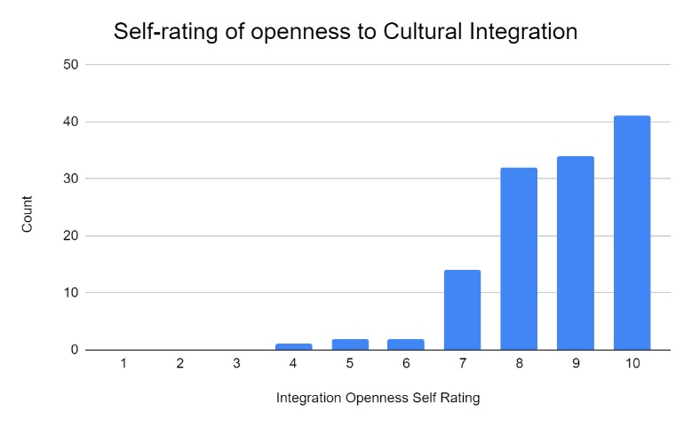

-

How participants self-rated their openness to cultural integration

Column chart of people with acquaintances from other cultures, religions, races and citizenship
Frequencies of interaction between own and other people using four factors
Interaction with different nationalities by local, permanent residents and foreigners
Summary of Surveys
The surveys indicate that:
Although a lot of people think they are open to integration, the number of people who will actually be acquaintances with people outside their own race, religion, culture and nationality remains relatively low.
Culture, race and religion aspects are not barriers to cultural integration. However, it is observed that some international students can still interact more often with the local students.
Most survey participants have attended less than 5 or zero cultural events in TP, but they believe the initiatives have been effective 7/10. Incentives like prizes, food and games can be put into the activities to attract more people to join in events, participate and learn more about other cultures, and possibly going to integrate more other cultural concepts into their daily life.
Summary of Interviews
A total of 5 students were interviewed for the project, with the questions being:
Question 1: Profiling of the interviewees
Question 2: Accommodation duration in Singapore
Question 3: Almost on a daily basis do you usually interact more with locals or international students in Singapore?
Question 4: Do you observe some people interacting with their own group of races on campus? If so, what races are they?
Question 5: Do you usually purposefully take time to learn about other cultures / participate in activities from other cultures, or races?
Question 6: If you could integrate a cultural concept from another culture/religion into your daily life, would you do it? If so, what concept do you want to integrate?
Question 7: How do you think we can improve cultural integration in TP?
The students' nationalities are Indian, Chinese, Malaysian, Singaporean and Myanmar, ranging from year 1 to 3.
Some have been staying in Singapore for a minimum of a year, and they indicated that they mostly interact with local students on a daily basis (due to the large population of local students).
However, they commonly agreed that they also interact with international students once they have a chance.
They commonly indicated to have observed Indian students (mostly from Kerala region of India) usually staying by their own group of friends during lunch etc. The Indian student explains this to be due to their common mother-tongue.
The majority of the interviewees mentioned intentionally stepping outside of their comfort zones to learn more about the other cultures, some, however, happen not to do so.
Most of the interviewees indicated their interest in integrating another culture into their daily life if they can find the cultural concept convincing.
A variety of school programs (overseas exchange programmes, bonding cultural events between local and international students (as in like Global Studies trip) or specific events catered to the international students) were suggested by the students who took the interviews.